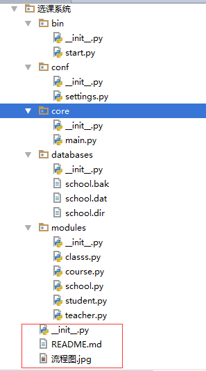
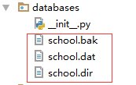

题目：选课系统开发，要求有四种角色:学校、学员、课程、讲师
详细要求:
1. 创建北京、上海2所学校
2. 创建linux,python,go3个课程，linux\py在北京开，go在上海开
3. 课程包含，周期，价格，通过学校创建课程
4. 通过学校创建班级，班级关联课程、讲师
5. 创建学员时，选择学校，关联班级
6. 创建讲师角色时要关联学校，
7. 提供两个角色接口
8. 为学员、讲师、管理员分别提供用户界面，并提供对应功能：
8.1 学员视图，可以注册，交学费，选择班级，
8.2 讲师视图，讲师可管理自己的班级，上课时选择班级，查看班级学员列表，修改所管理的学员的成绩
8.3 管理视图，创建讲师，创建班级，创建课程说明：
程序运行入口是：bin文件夹下的start.py
结构见流程图

选课系统
bin目录下
start.py# -*- coding:utf-8 -*-
#Author:simon
import os,sys
BASE_DIR = os.path.dirname(os.path.dirname(os.path.abspath(__file__)))
sys.path.append(BASE_DIR)
#print(sys.path)
from core import main
from conf import settings
if __name__ == '__main__':
obj = main.Manage_center()
obj.run()conf下的文件
settings# -*- coding:utf-8 -*-
#Author:simon
import os
BASE_DIR = os.path.dirname(os.path.dirname(os.path.abspath(__file__)))
database_path = os.path.join(BASE_DIR,"databases")
#print(data_path)
school_db_file = os.path.join(database_path,"school")core下的文件
main.py# -*- coding:utf-8 -*-
#Author:simon
import os,sys,shelve
from conf import settings
from modules.school import School
class Manage_center(object):
def __init__(self):
pass
def run(self):
while True:
print("\033[31;0m欢迎进入选课系统\033[0m\n"
"1 学生视图\n"
"2 教师视图\n"
"3 管理视图\n"
"4 退出学员管理系统(请按q)\n")
user_choice = input("请输入您要进入的视图序号:")
if user_choice == '1':
Manage_student()
elif user_choice == '2':
Manage_teacher()
elif user_choice == '3':
Manage_school()
elif user_choice == 'q':
print("感谢使用学员管理系统")
break
else:
print("请输入正确的选项")
class Manage_school(object):
'''学校管理视图'''
def __init__(self):
if os.path.exists(settings.school_db_file+".dat"): #shelve会生成三个文件，其中有.dat结尾
self.school_db = shelve.open(settings.school_db_file) #打开学校数据库文件
self.run_manage() #运行管理视图
self.school_db.close() #关闭数据库文件
else:
print("系统信息：初始化数据库")
self.initialize_school() #初始化数据库
self.run_manage()
self.school_db.close()
def initialize_school(self): ##初始化两所学校
self.school_db = shelve.open(settings.school_db_file)
self.school_db['北京'] = School('北京', '中国.北京')
self.school_db['上海'] = School('上海', '中国.上海')
def run_manage(self):
'''运行学校管理视图 '''
while True:
for key in self.school_db:
print("学校名称：",key)
choice_school = input("输入要管理的学校名:").strip()
if choice_school in self.school_db:
self.choice_school = choice_school
self.school_obj = self.school_db[choice_school] #取出value值
while True:
print("\n\033[31;0m欢迎来到老男孩%s校区\033[0m\n"
"添加课程 add_course\n"
"增加班级 add_class\n"
"招聘讲师 add_teacher\n"
"查看课程 check_course\n"
"查看班级 check_class\n"
"查看讲师 check_teacher\n"
"退出程序 exit"% self.choice_school) ##也有可以self.school_obj.school_name
user_func = input("输入要操作的\033[34;0m英文\033[0m指令:").strip()
if hasattr(self,user_func):
getattr(self,user_func)()
else:
print("输入错误：请输入正确的学校名>>")
def add_course(self):
course_name = input("输入要添加课程的名称:").strip()
course_price = input("输入要添加课程的价格:").strip()
course_time = input("输入要添加课程的周期:").strip()
if course_name in self.school_obj.school_course: #判断课程是否已经添加过
print("课程存在")
self.school_obj.create_course(course_name, course_price, course_time)
print("课程更新完成")
else:
self.school_obj.create_course(course_name,course_price,course_time)
print("课程添加成功")
self.school_db.update({self.choice_school: self.school_obj}) #更新数据库数据 k:v
def add_class(self):
class_name = input("输入要添加班级的名称：").strip()
course_name = input("输入要关联的课程：").strip()
if class_name not in self.school_obj.school_class:
if course_name in self.school_obj.school_course:
course_obj = self.school_obj.school_course[course_name]
self.school_obj.create_class(class_name,course_obj)
self.school_db.update({self.choice_school: self.school_obj}) # 更新数据库数据
print("班级创建成功")
else:
print("\33[31;1m系统错误：关联的课程不存在\33[0m")
else:
print("\33[31;1m系统错误：班级已经存在\33[0m")
def add_teacher(self):
teacher_name = input("输入要招聘教师的名称：").strip()
teacher_salary = input("输入教师的薪资：").strip()
teacher_class = input("输入要关联的班级：").strip()
if teacher_class in self.school_obj.school_class: #判断班级是否存在
class_obj = self.school_obj.school_class[teacher_class] #获取班级名对应的实例
if teacher_name not in self.school_obj.school_teacher:#判断招聘教师是否存在，不存在创建，存在更新
self.school_obj.create_teacher(teacher_name,teacher_salary,teacher_class,class_obj)
print("新讲师招聘成功")
else:
self.school_obj.update_teacher(teacher_name, teacher_class, class_obj)
print("讲师已经存在，信息更新完成")
self.school_db.update({self.choice_school: self.school_obj}) # 更新数据库数据
else:
print("\33[31;1m系统错误：关联的班级不存在\33[0m")
def check_course(self):
self.school_obj.show_course()
def check_class(self):
self.school_obj.show_class()
def check_teacher(self):
self.school_obj.show_teacher()
def exit(self):
self.school_db.close()
sys.exit("\033[32;1m欢迎下次使用学员管理系统\033[0m")
class Manage_student(object):
'''学生视图'''
def __init__(self):
if os.path.exists(settings.school_db_file + ".dat"): # shelve会生成三个文件，其中有.dat结尾
self.school_db = shelve.open(settings.school_db_file) # 打开学校数据库文件
self.run_manage() # 运行管理视图
self.school_db.close() # 关闭数据库文件
else:
print("数据库文件不存在，请先创建学校")
exit()
def run_manage(self):
print("\n欢迎进入学员视图")
for key in self.school_db:
print("学校名称：", key)
choice_school = input("输入选择注册的学校名:").strip()
if choice_school in self.school_db:
self.choice_school = choice_school
self.school_obj = self.school_db[choice_school]
student_name = input("输入学生的姓名：").strip()
student_age = input("输入学生的年龄：").strip()
self.school_obj.show_class_course()
class_choice = input("输入上课的班级：").strip()
if class_choice in self.school_obj.school_class:
self.school_obj.create_student(student_name,student_age,class_choice)
self.school_db.update({self.choice_school: self.school_obj}) # 更新数据库数据
print("学生注册成功")
else:
print("\33[31;1m系统错误：输入的班级不存在\33[0m")
else:
print("\33[31;1m系统错误：输入的学校不存在\33[0m")
class Manage_teacher(object):
'''教师视图'''
def __init__(self):
if os.path.exists(settings.school_db_file + ".dat"): # shelve会生成三个文件，其中有.dat结尾
self.school_db = shelve.open(settings.school_db_file) # 打开学校数据库文件
self.run_manage() # 运行管理视图
self.school_db.close() # 关闭数据库文件
else:
print("数据库文件不存在，请先创建学校")
exit()
def run_manage(self):
for key in self.school_db:
print("学校名称：", key)
choice_school = input("输入选择学校名:").strip()
if choice_school in self.school_db:
self.choice_school = choice_school
self.school_obj = self.school_db[choice_school]
teacher_name = input("输入登录讲师的姓名：").strip()
while True:
if teacher_name in self.school_obj.school_teacher:
print("\033[31;0m欢迎来到教师中心\033[0m\n"
"查看班级 check_class\n"
"退出程序 exit\n" )
user_func = input("输入要操作的命令：").strip()
if hasattr(self, user_func):
getattr(self, user_func)(teacher_name)
else:
print("讲师不存在")
def check_class(self,teacher_name):
self.school_obj.show_teacher_classinfo(teacher_name)
def exit(self,*args):
self.school_db.close()
sys.exit("欢迎下次使用学员管理系统")databases下的文件
 是pickle自动生成的数据库文件
modules下的文件
class.py
# -*- coding:utf-8 -*-
#Author:simon
class Class(object):
'''班级类，包含名称，课程，学生'''
def __init__(self,class_name,course_obj):
self.class_name = class_name
self.class_course = course_obj
self.class_student = {} #学生字典
course.py
# -*- coding:utf-8 -*-
#Author:Kris
class Course():
'''定义课程类，包含名称，价格，周期'''
def __init__(self,course_name,course_price,course_time):
self.course_name = course_name
self.course_price = course_price
self.course_time = course_timeschool.py
# -*- coding:utf-8 -*-
#Author:simon
from modules.course import Course
from modules.classs import Class
from modules.teacher import Teacher
from modules.student import Student
class School(object):
'''学校类，包含名称，地址，课程，班级，教师'''
def __init__(self,school_name,school_addr):
self.school_name = school_name
self.school_addr = school_addr
self.school_course = {} #学校所有的课程实例
self.school_class = {}
self.school_teacher = {}
#self.school_student = {}
def create_course(self,course_name,course_price,course_time):
'''创建课程'''
course_obj = Course(course_name,course_price,course_time)
self.school_course[course_name] = course_obj
def show_course(self):
'''查看课程信息'''
for key in self.school_course:
course_obj = self.school_course[key]
print("\33[32;1m课程：%s\t价格：%s\t周期：%s个月\33[0m"%(course_obj.course_name,course_obj.course_price,
course_obj.course_time,))
def create_class(self,class_name,courese_obj):
'''创建班级'''
class_obj = Class(class_name,courese_obj)
self.school_class[class_name] = class_obj
def show_class(self):
for key in self.school_class:
class_obj = self.school_class[key]
print("\33[32;1m班级：%s\t关联课程：%s\33[0m" % (class_obj.class_name, class_obj.class_courese.course_name))
def show_class_course(self):
for key in self.school_class:
class_obj = self.school_class[key]
course_obj = class_obj.class_courese
print("\33[32;1m班级：%s\t关联课程：%s\t价格：%s\t周期：%s月\33[0m" % (class_obj.class_name, course_obj.course_name,
course_obj.course_price,course_obj.course_time))
def create_teacher(self,teacher_name, teacher_salary,class_name,class_obj):
'''创建讲师'''
teacher_obj = Teacher(teacher_name, teacher_salary)
teacher_obj.teacher_add_class(class_name,class_obj)
self.school_teacher[teacher_name] = teacher_obj
def update_teacher(self,teacher_name,class_name,class_obj):
'''更新教师信息'''
teacher_obj = self.school_teacher[teacher_name]
teacher_obj.teacher_add_class(class_name,class_obj)
def show_teacher(self):
'''查看讲师信息'''
for key in self.school_teacher:
teacher_obj = self.school_teacher[key]
class_list = []
for i in teacher_obj.teacher_calss:
class_list.append(i)
print("\33[32;1m讲师：%s\t薪资：%s\t关联班级：%s\33[0m" % (teacher_obj.teacher_name, teacher_obj.teacher_salary,
class_list ))
def create_student(self,student_name,student_age,class_choice):
'''注册学生'''
student_obj = Student(student_name,student_age) #生成学生实例
class_obj = self.school_class[class_choice] #获取学生所注册班级的实例对象
class_obj.class_student[student_name]=student_obj #班级实例里添加学生信息
self.school_class[class_choice] = class_obj #学校班级字典更新
def show_teacher_classinfo(self,teacher_name):
teacher_obj = self.school_teacher[teacher_name]
for i in teacher_obj.teacher_calss:
class_obj = self.school_class[i]
student_list = []
for k in class_obj.class_student:
student_list.append(k)
print("\33[32;1m班级：%s\t关联课程：%s\t学员:%s\33[0m"
% (class_obj.class_name, class_obj.class_courese.course_name,student_list))student.py
# -*- coding:utf-8 -*-
#Author:simon
class Student(object):
'''学生类，包含姓名，年龄'''
def __init__(self,student_name,student_age):
self.student_name = student_name
self.student_age = student_ageteacher.py
# -*- coding:utf-8 -*-
#Author:simon
class Teacher(object):
'''讲师类，定义teacher_name，teacher_salary，包含teacher_class'''
def __init__(self, teacher_name, teacher_salary):
self.teacher_name = teacher_name
self.teacher_salary = teacher_salary
self.teacher_calss = {}
def teacher_add_class(self,class_name,class_obj):
self.teacher_calss[class_name] = class_obj